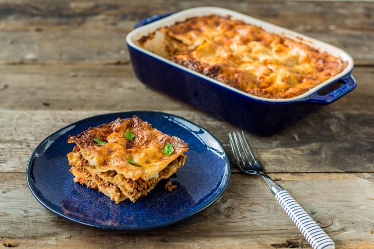

"Bolognese" Lasagna

This classic lasagne alla Bolognese recipe is the ultimate Italian comfort food.
Known the world over simply as 'lasagne', this traditional version hold those characteristic layers of pasta, béchamel and rich ragù made of pork and beef mince.
Use fresh lasagne sheets for best results.
Ingredients:
- 15 sheets of lasagne pasta, preferably fresh
- 100g of Parmesan, grated
- basil, to garnish
For the Ragu:
- 500g of pork mince
- 500g of beef mince
- 100g of pancetta, cubed
- 1 onion, finely diced
- 2 garlic cloves, sliced
- 2 sticks of celery, finely diced
- 1 large carrot, peeled and finely diced
- 200ml of red wine, (or white)
- 1 tin of chopped tomatoes
- 150ml of milk
- 3 tbsp of olive oil
For the Béchamel:
- 50g of butter
- 50g of flour
- 1 bay leaf
- 750ml of whole milk, warmed
- 1 dash of white wine vinegar
- Nutmeg, grated
Steps:
- To begin, make the ragù.
Heat 2 tbsp of oil in a heavy-based pan and brown the mince (you may want to do this in batches to avoid overcrowding the pan,
which will stew the meat rather than brown it). Once nicely browned, remove from the pan.
Depending on the quality of the mince, there may be a lot of fat – if so, drain most of it away then set aside the cooked mince
- Give the pan a quick wipe out with kitchen paper, then sauté the pancetta in 1 tbsp of olive oil
- Add the onions, garlic, celery and carrot and gently sauté for about 5 minutes, but don’t allow them to colour
- Add the mince back to the pan, give everything a stir and add the wine. Turn up the heat and reduce the liquid by half
- Next add the tinned tomatoes, followed by the milk. Turn down to a low heat, stir well and put a lid on the pan
- Leave to simmer for 2–3 hours, stirring occasionally
- To make the béchamel, melt the butter in a pan. Add the flour, cook out for a couple of minutes, then add the bay leaf.
Slowly whisk in the milk and simmer over a low heat for 8 minutes, constantly stirring to avoid it catching
- Grate in some nutmeg and season with salt and a dash of white wine vinegar to taste
- Remove from the heat and lay a sheet of cling film over the surface of the sauce until ready to use to prevent a skin from forming
- Once you have your ragù and béchamel ready (both of which can be made a day in advance if needed) it’s time to start layering up the lasagne
- Preheat the oven to 180°C
- Begin with a layer of ragù, then a layer of béchamel, a sprinkling of Parmesan then neatly tiled lasagna sheets.
The final layers should be lasagna topped with béchamel and a grating of Parmesan
- Bake in the oven for 45 minutes, covering the top with foil if it's browning too quickly. Remove from the oven and serve